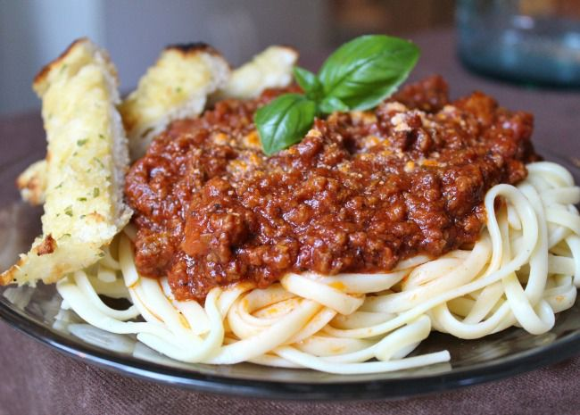

Home
Spaghetti

Vegan spaghetti
You need: spaghetti, tomato sauce, onions, soja granulate, garlic, oregano
Ingredients
- 500 ml Tomato sauce
- 500 gSpaghetti
- 3 garlic toes
- 50 g soja granulate
- 1 onion
Steps
- Cut the onions and the garlic in little pieces
- Grill the onions and garlic in a pan with oil
- Add the tomato sauce and the soja granules to the pan
- Cook 1 l of water and add salt
- Add the spaghetti to the cooking water and cook for 10 minutes
- Test if the spaghetti are "al dente"